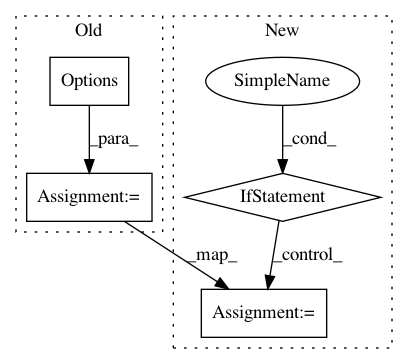

01569e73dffe4315bee627906abf2f01b1d860e5,examples/mnist/keras/mnist_tf_ds.py,,main_fun,#Any#Any#,6
Before Change
// tfos: /path/to/mnist/tfr/train/part-r-*
image_pattern = ctx.absolute_path(args.images_labels)
options = tf.data.Options()
options.experimental_distribute.auto_shard = False
ds = tf.data.Dataset.list_files(image_pattern)
ds = ds.with_options(options)
ds = ds.repeat(args.epochs).shuffle(BUFFER_SIZE)
ds = ds.interleave(tf.data.TFRecordDataset)
train_datasets_unbatched = ds.map(parse_tfos)
def build_and_compile_cnn_model():
model = tf.keras.Sequential([
tf.keras.layers.Conv2D(32, 3, activation="relu", input_shape=(28, 28, 1)),
After Change
ds = ds.repeat(args.epochs).shuffle(BUFFER_SIZE)
ds = ds.interleave(tf.data.TFRecordDataset)
if args.data_format == "tfds":
train_datasets_unbatched = ds.map(parse_tfds)
else: // "tfos"
train_datasets_unbatched = ds.map(parse_tfos)
def build_and_compile_cnn_model():
model = tf.keras.Sequential([
tf.keras.layers.Conv2D(32, 3, activation="relu", input_shape=(28, 28, 1)),
tf.keras.layers.MaxPooling2D(),
In pattern: SUPERPATTERN
Frequency: 3
Non-data size: 4
Instances
Project Name: yahoo/TensorFlowOnSpark
Commit Name: 01569e73dffe4315bee627906abf2f01b1d860e5
Time: 2019-12-02
Author: leewyang@verizonmedia.com
File Name: examples/mnist/keras/mnist_tf_ds.py
Class Name:
Method Name: main_fun
Project Name: ilastik/ilastik
Commit Name: e893cb446a8607da202be10714f76a9a41f72710
Time: 2013-11-19
Author: burcin@erocal.org
File Name: ilastik/applets/dataSelection/dataSelectionGui.py
Class Name: DataSelectionGui
Method Name: getImageFileNamesToOpen
Project Name: ilastik/ilastik
Commit Name: a56077ccaaccab72728d1254895ddb6104361f27
Time: 2013-04-10
Author: ullrich.koethe@iwr.uni-heidelberg.de
File Name: ilastik/widgets/massFileLoader.py
Class Name: MassFileLoader
Method Name: handleDirectoryButtonClicked